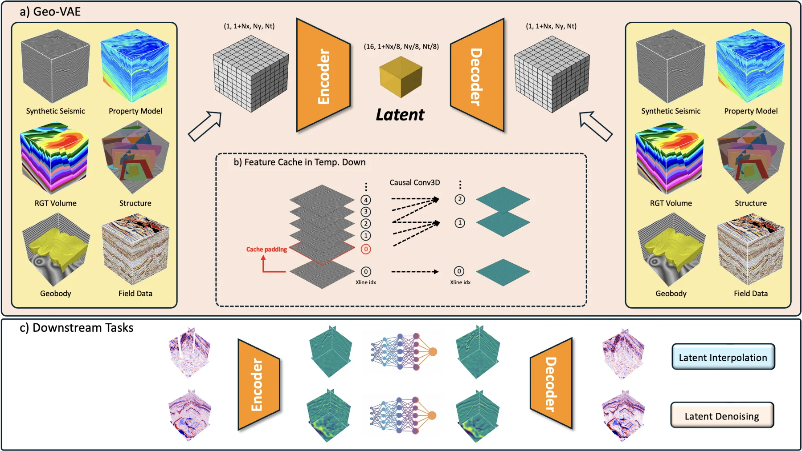

{kind=link}
Undergraduate Research Intern
Supervisor: Prof. Tapan Mukerji
AI for Geophysics · Computational Geoscience
I am an undergraduate student majoring in Geophysics at the University of Science and Technology of China (USTC), expecting to graduate in June 2027.
At USTC, I conduct research in the Computational Interpretation Group under the supervision of Prof. Xinming Wu. My work focuses on deep learning for seismic data.
I am also an Undergraduate Research Intern at the Stanford Center for Earth Resources Forecasting (SCERF), working with Prof. Tapan Mukerji on rock physics and CO₂ storage.
I plan to pursue a Ph.D. and am broadly interested in artificial intelligence and Subsurface Energy Systems.
Will give an oral presentation on Geo‑VAE at IMAGE 2026 in Houston.
Joined Stanford SCERF as an Undergraduate Research Intern.
Joined the Computational Interpretation Group at USTC.
A unified variational autoencoder for compression and latent processing of seismic volumes, RGT cubes, property models, structures, geobodies, and field data. The model achieves 8×8×8 spatial compression with high-fidelity reconstruction.
Causal 3D convolutions and feature caching enable memory-efficient inference on large volumes. The learned latent space supports missing-trace interpolation and seismic denoising.

Degradation-representation learning for robust suppression of random noise, acquisition footprints, and migration artifacts in 3D seismic data. [Code]
A 2.5D full-image U-Net emulator mapping global physical ocean fields to coupled biogeochemical variables, with evaluation under anomalous ocean-climate conditions. Manuscript in preparation.
An automated pipeline aligning GNSS TEC-derived ionospheric phase with NISAR dual-frequency InSAR for high-resolution super-resolution research.
Undergraduate Research Intern
Supervisor: Prof. Tapan Mukerji
Undergraduate Researcher
Supervisor: Prof. Xinming Wu
B.S. Candidate in Geophysics, School of the Gifted Young